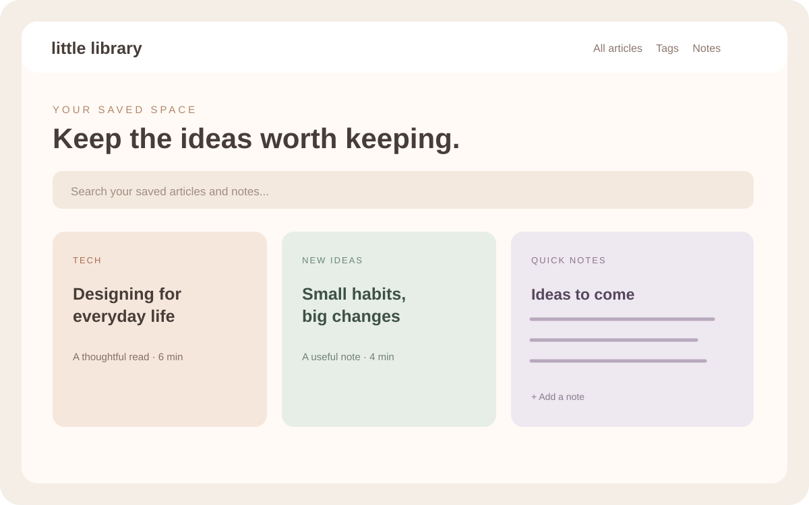
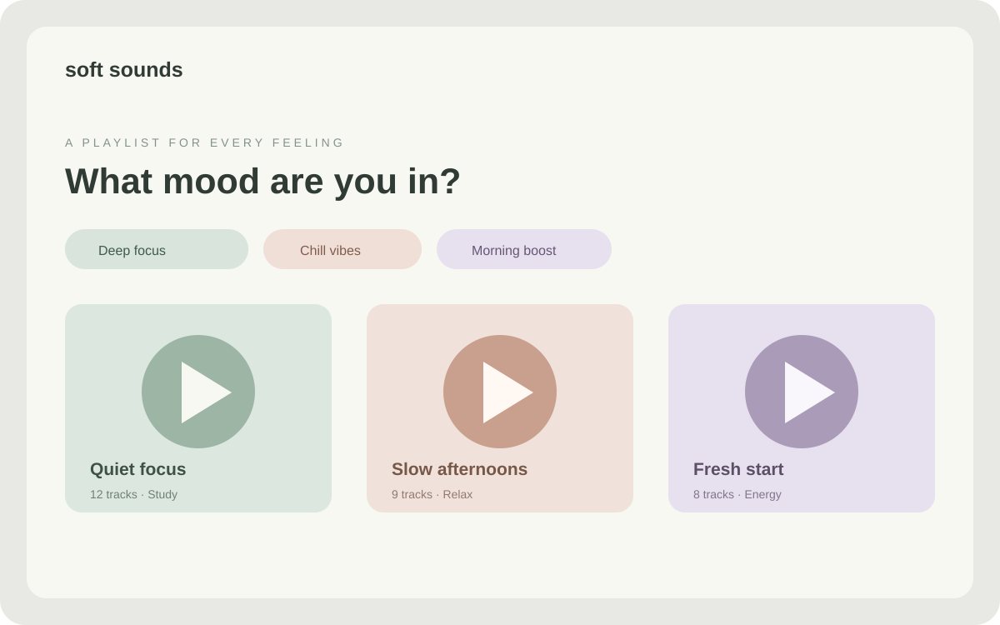
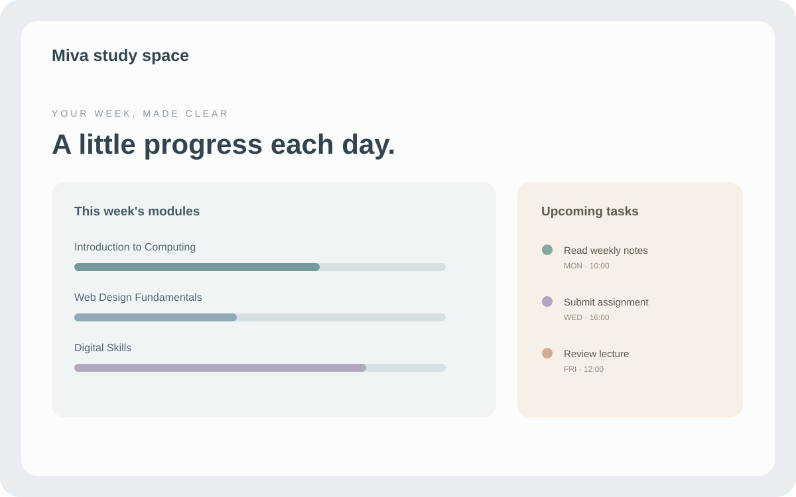

WEB DEVELOPMENT · HTML, CSS, JAVASCRIPT
Personal Article & Idea Hub
A simple space to save useful articles and ideas, organise them with tags, and add quick notes to revisit later.
View sampleThings I’m exploring
This space will grow as I learn, practise and create.

A simple space to save useful articles and ideas, organise them with tags, and add quick notes to revisit later.
View sample
An interactive playlist page for grouping music by mood, with simple filters for focus, quiet moments and a fresh start.
View sample
A lightweight student planner for keeping track of weekly modules, coursework deadlines and personal study goals.
View sample